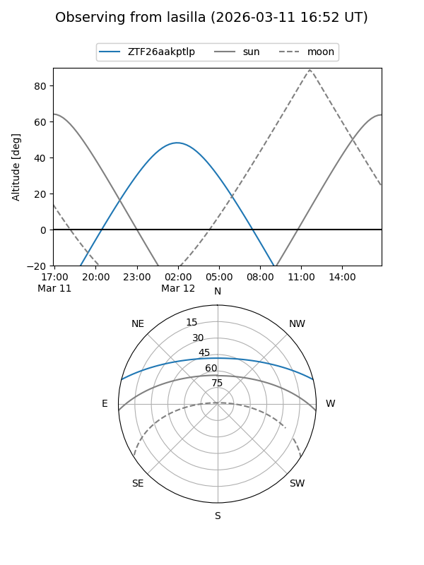
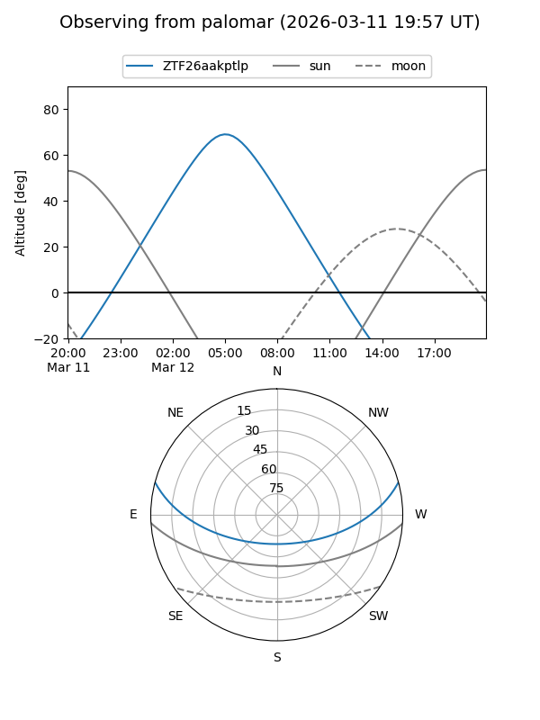

ZTF26aakptlp
Target ZTF26aakptlp at 2026-03-12 08:35
Aliases and brokers:
FINK: link
Lasair: link
ALeRCE: link
alt names
ZTF26aakptlp (ztf,fink_ztf)
Coordinates:
equatorial (ra, dec) = 127.8392,+12.54364
equatorial (HMS+DMS) = 08:31:21.40,+12:32:37.11
galactic (l, b) = (212.5870,+27.76849)
Flags:
Photometry:
last ztfg=19.69
1 ztfg detections
Lightcurve
Visibility


Additional plots